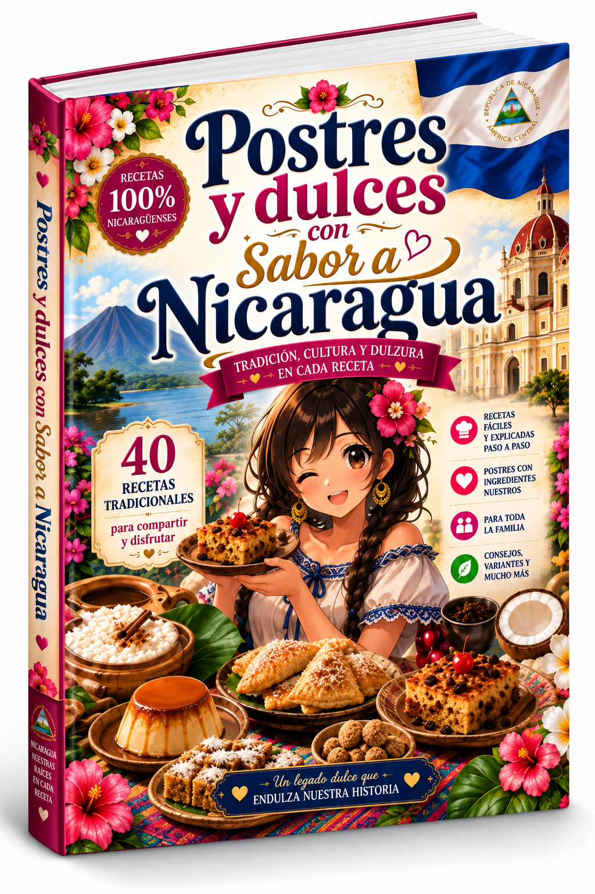

Cocina Nicaragüense 2.0
Recetas auténticas, fáciles y explicadas paso a paso. Disfruta la tradición en tu hogar.
US$ 12.00
Libros digitales para disfrutar la auténtica gastronomía nicaragüense
Recetas auténticas, fáciles y explicadas paso a paso. Disfruta la tradición en tu hogar.

Más de 15 bebidas tradicionales nicaragüenses con recetas detalladas, historia y consejos.

40 recetas de postres y dulces tradicionales, con historia, cultura y ese sabor de nuestra tierra.
Flores Universo nace de un sueño familiar: convertir nuestro amor por Nicaragua, nuestra cultura y nuestra gastronomía en un proyecto que podamos compartir con el mundo.
Somos una familia que cree que detrás de cada receta existe una historia, un recuerdo y una parte de nuestras raíces. Por eso reunimos en nuestros libros digitales algunos de los sabores que hacen de Nicaragua un país tan especial.
Nuestra gastronomía es tan variada como nuestra tierra: gallo pinto, nacatamal, baho, indio viejo, vigorón, bebidas tradicionales, postres y dulces típicos. Cada región aporta ingredientes, costumbres y formas de preparar los alimentos que han pasado de generación en generación.
Queremos que nuestras recetas lleguen a los hogares de Nicaragua y también a quienes están lejos de nuestra tierra, para que puedan volver a sentir un pedacito de ella a través de sus sabores.
Nuestra misión es sencilla: conservar nuestras raíces, compartir nuestra cultura y llevar un pedacito de Nicaragua a cada rincón del mundo. 🇳🇮❤️
Nicaragua se saborea,
se vive y se comparte ♥